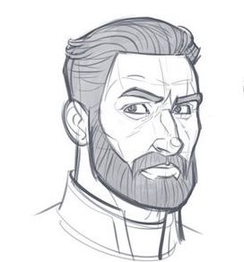

Arquetipos de Usuarios

Rodrigo, 55
Esta en busca de un diseñador (freelance) que este dispuesto a hacer una pequeña pega de diseño de un puzzle para su empresa. Busca a traves de su computador en google, más especificamente portafolios que esten en páginas web.
Patricia, 32
Busca un dieñador integral (que sepa sobre branding) para que le ayude a darle una mejor identidad gráfica y de marca a su emprendimiento. Busca en redes sociales y webs, mira detalladamente y se da el tiempo para encontrar lo que busca.
Lulu, 18
Esta en cuarto medio y esta decidiendo qe estudiar por lo que esta buscando trabajos de diseñador para saber de que trata la carrera. Busca a traves de las redes sociales y por google. Su busqueda no es muy profunda.